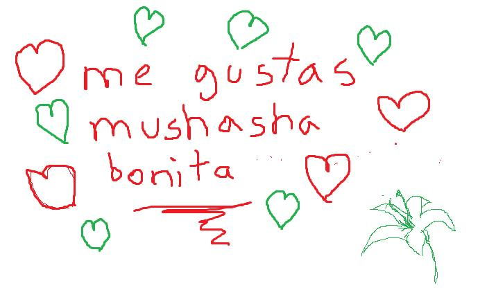

Carta 00001
Recuerdo las primeras veces que te vi, en sesiones todas feas de tims, sobre la shamba, cuando aún era un soporte todo pequeño, y pensaba "oh que bonita esa mushasha". Y de pronto un día llegué a al back y entonces escuché tu voz y me gustó, pero aún me resistía a sentir.
Un día hablamos por tims, yo no me acordaba pa q, nomás recordaba que fue divertido, compartimos teléfonos y te mandé la foto de un pan, mi pan favorito jajajaja y empezamos a hablar casi diario y lo disfrutaba. A veces solo enviabamos reels tú y tiktoks yo, a veces solo decíamos pendejadas jajaja, otras veces compartíamos música, más tú que yo, pero uno de mis mayores gustos es escuchar a la gente hablar de lo que le gusta porque son felices cuando lo hacen, y tú lo disfrutas mucho, y no lo escondes, disfrutas todo sin importar que ni quien te vea, te ries con autenticidad y sin darme cuenta me enamoré de esa risa que demostraba tus emociones.
"Y entonces su corazón creció 3 tallas"
Y con los días mientras más hablabamos más me gustabas y me sentía más y más libre, más fuerte, hacías mis días más llevaderos. Y aunque disfruto bastante mi soledad, estar contigo (aunque fuera por mensaje) me divertía bastante con cada conversación, ya fuera muy larga o solo una frase para reirnos unos segundos. Nos contamos historias que vivimos, como fueron nuestras vidas y aunque me hubiera gustado conocerte antes, como en algún momento dijiste, nos conocimos en el momento que tenía que ser. O como diría Gandalf "Un mago nunca llega tarde, Frodo Bolsón, ni pronto, llega exactamente cuando se lo propone." Weno, algo así... ya sabes arbol que muerde se lo lleva la corriente por su silla.
Después de todo el tiempo conversando decidí que debía decirte lo que
sentía, porque había prometido ser honesto contigo, y pues el mushasho
ya se había enamorao. Y te dije que me gustabas...
Me pediste que nos conocieramos más y eso hicimos...
Y te empecé a querer
Y nos seguimos conociendo y aprendiendo más y más uno del otro, seguimos seguimos platicando, nos empezamos a mandar audios muy seguido, y fuiste la única a la que decidí que podía mandar audios y me gustó, me gustaste más. Hicimos muchas cosas nuevas, vimos películas, aprendí más gustos tuyos, practicamos inglish, teníamos retos, y me gustaste más...
Aprendí de tí, de tu fuerza, de tu valentía, de tu inteligencia y de tu alma, tu ser... Y... un día decidiste venir y nos conocimos y pude abrazarte por fin... y me besaste y fue maravilloso y fue mi primer beso...
Te admiro tanto, que ya solo pienso en que quiero verte el mayor tiempo que sea posible, quiero acompañarte en lo que sea que siga, tomar tu mano y ser libres...
y así, te empecé a amar
Te amo ❤️
